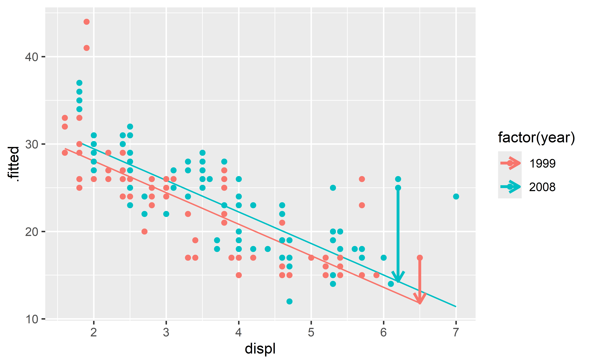
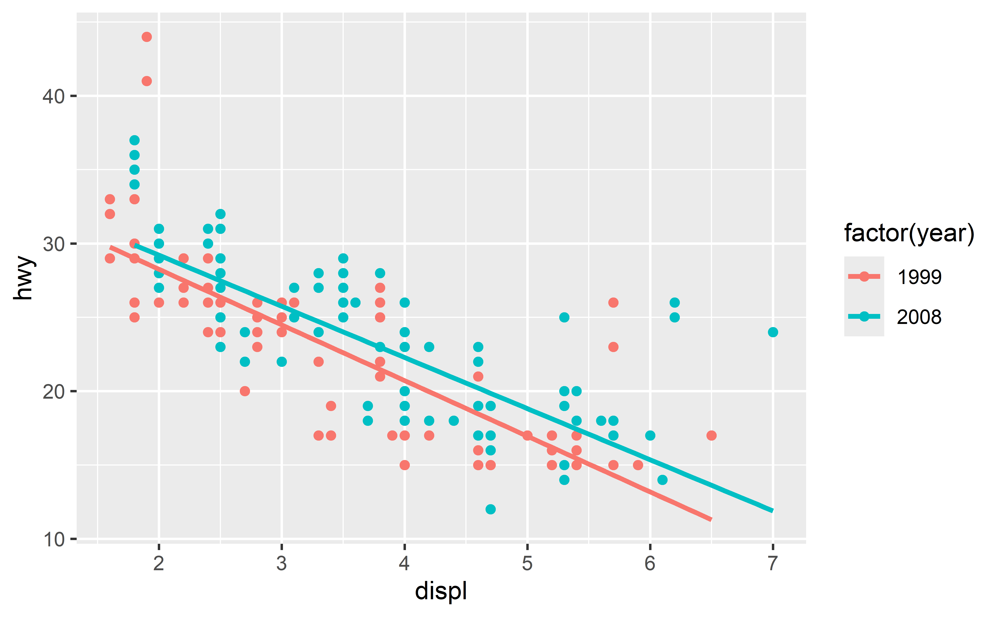
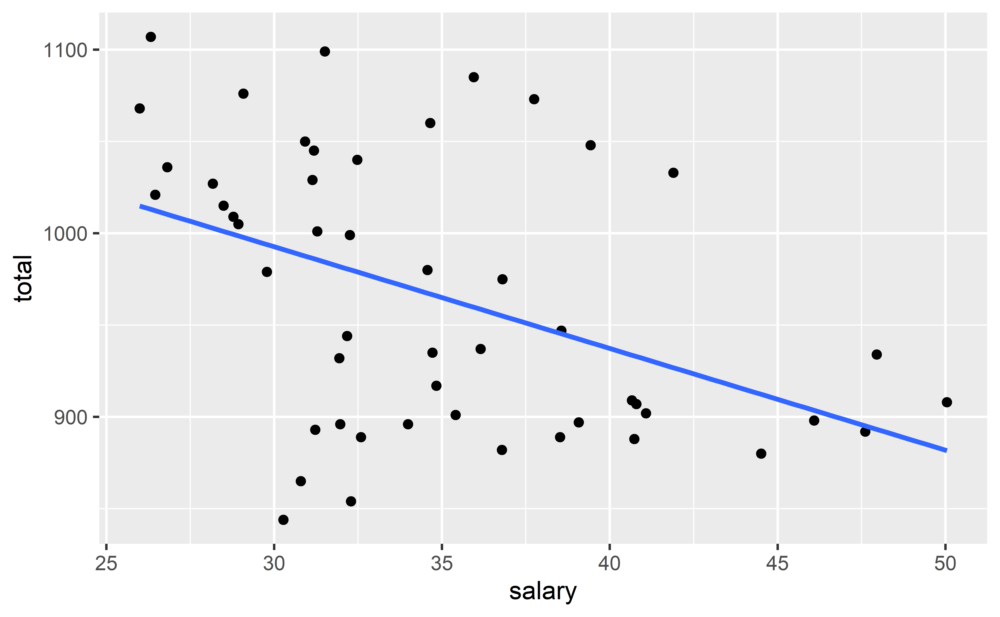
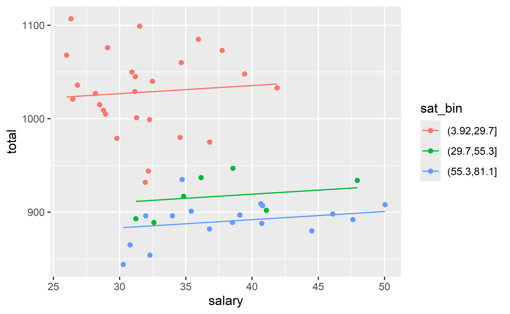
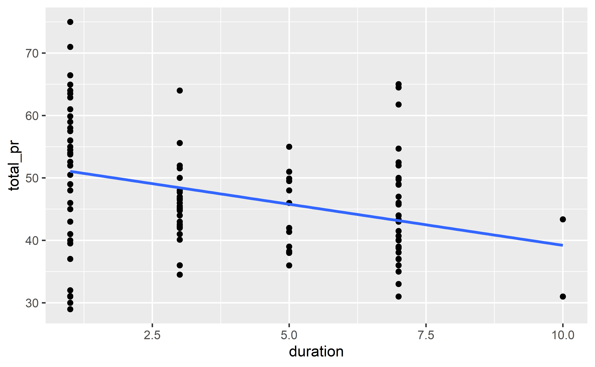

Welcome!
Overview
Welcome to this interactive tutorial on evaluating and extending parallel slopes models in multiple regression. This activity builds on your understanding of parallel slopes models by introducing techniques for model evaluation, comparison, and extension.
Learning Objectives
By the end of this tutorial, you will be able to:
- Evaluate model fit by interpreting residuals, R-squared, and adjusted R-squared values
- Generate predictions using fitted models with both
predict()andaugment()functions - Compare models using adjusted R-squared to account for model complexity
- Build interaction models that allow slopes to vary across groups
- Visualize interaction effects using ggplot2 with group-specific regression lines
- Identify and interpret Simpson’s Paradox in real data contexts
- Apply these concepts to two real datasets: fuel economy (mpg) and MarioKart auctions
Let’s explore these concepts more formally before applying them to data.
Model fit, residuals, and prediction
Residuals

One of the most natural questions we might have about our model is: “how well does it fit?” We measure this by computing—for each observation—the difference between the actual value of the response variable and the fitted value from our model. This distance is called a residual. Residuals for two observations are illustrated in this plot with vertical arrows. Just as in simple linear regression, the model fitting procedure will automatically minimize the length of those arrows across all of the points.
In a parallel slopes model, our model is represented by two lines, but only one of the lines is relevant for each observation. In the plot, the green points—each corresponding to a car made in 2008—are compared to the green line, and the orange points—each corresponding to a car made in 1999—are compared to the orange line.
Note that this necessarily makes our parallel slopes model more flexible than a simple linear regression model. The two lines are constrained to be parallel, but we still have two instead of one. If the best fit occurs when the two lines are very close together, then the coefficient of the categorical variable will be very small, and the parallel slopes model will be very similar to the simple linear regression model.
Model Fit
The coefficient of determination—usually called R-squared or \(R^2\)—carries over from simple linear regression. Recall that the sum of the squared residuals (or errors) is denoted SSE. If the model fits the data better, then the residuals are smaller, the SSE is smaller, and the \(R^2\) value is higher. The total sum of the squares—denoted SST—is a function of the response variable alone and does not depend on the model.
In general, a higher \(R^2\) may be a sign of a better model fit, but the situation becomes more complicated in multiple regression because additional explanatory variables will always increase \(R^2\). Thus, model fits in multiple regression are often compared using the adjusted \(R^2\) value defined here. Note that the only difference is that a penalty is applied as the number of explanatory variables \(p\) increases. Unlike \(R^2\), adjusted \(R^2\) will not necessarily increase as new explanatory variables are added—it could go up or down. The downside is that it is no longer directly interpretable as a percentage of variance explained.
To summarize:
- \(R^2 = 1 - \frac{SSE}{SST}\)
- \(SSE\) gets smaller as \(\Rightarrow R^2\) increases
- As \(p\) (number of explanatory variables) increases \(R^2\) will always increase (or stay the same)
- To adjust for an increasing \(R^2\) use: \(R^2_{adj} = 1 - \frac{SSE}{SST} \cdot \frac{n-1}{n-p-1}\)
Fitted values
# returns a vector
predict(mod)# returns a data.frame
augment(mod)Retrieving the fitted values produced by our model can be done in two
different ways. The predict() function will return the
fitted values as a vector, while the augment() function
from the broom package will return a data.frame that contains the
original observations, the fitted values, the residuals, and several
other diagnostic computations.
Since this tutorial uses the tidyverse, we will generally prefer the latter method.
Another important bit of functionality is the ability to make out-of-sample predictions. This means using our model to make predictions about observations that were not part of the data set on which the model was fit.
2008 Toyota Matrix

For example, suppose you currently drive a 2008 Toyota Matrix like the one you see here. However, this car isn’t in our dataset. What does our model predict for the fuel economy of this car?
Predictions
new_obs <- data.frame(displ = 1.8, year = 2008)# returns a vector
predict(mod, newdata = new_obs)## 1
## 30.17807# returns a data.frame
augment(mod, newdata = new_obs)To figure this out, we can simply input the values of the explanatory
variables. In this case, my car has a 1.8 liter engine. We can create a
new data.frame with the information, and then feed it to
predict() or augment() using the newdata
argument. Either function will return a predicted mileage of 30.18 mpg.
This is slightly less than the manufacturer’s reported 33 mpg, giving us
a residual of 2.82 mpg.
\(R^2\) vs. adjusted \(R^2\)
Two common measures of how well a model fits to data are \(R^2\) (the coefficient of determination) and the adjusted \(R^2\). The former measures the percentage of the variability in the response variable that is explained by the model. To compute this, we define
\[ R^2 = 1 - \frac{SSE}{SST} \,, \]
where \(SSE\) and \(SST\) are the sum of the squared residuals, and the total sum of the squares, respectively. One issue with this measure is that the \(SSE\) can only decrease as new variables are added to the model, while the \(SST\) depends only on the response variable and therefore is not affected by changes to the model. This means that you can increase \(R^2\) by adding any additional variable to your model - even random noise.
The adjusted \(R^2\) includes a term that penalizes a model for each additional explanatory variable (where \(p\) is the number of explanatory variables).
\[ R^2_{adj} = 1 - \frac{SSE}{SST} \cdot \frac{n-1}{n-p-1} \,, \]
Your turn
Model Fit
Now try it for yourself. The model mod from the
mariokart data set is already in your workspace.
- Use
mutate()to add a variable callednoiseby callingrnorm()with the argumentnequal to thenrow()to themariokartdata set. Save the new dataframe asmariokart_noisy. - The first argument of
lm()is a formula involving the variablestotal_pr,wheels,cond, andnoise. - Call the function
summary()to compute \(R^2\) and adjusted \(R^2\) on the new model objectmod2. Did the value of \(R^2\) increase? What about adjusted \(R^2\)?
# R^2 and adjusted R^2
# add random noise
mariokart_noisy <- ____
# compute new model
mod2 <- ____
# new R^2 and adjusted R^2
_____(____)# R^2 and adjusted R^2
summary(mod)# add random noise
mariokart_noisy <- mariokart |>
mutate(noise = rnorm(n = nrow(mariokart)))# compute new model
mod2 <- lm(total_pr ~ wheels + cond + noise, data = mariokart_noisy)# R^2 and adjusted R^2
summary(mod)
# add random noise
mariokart_noisy <- mariokart |>
mutate(noise = rnorm(n = nrow(mariokart)))
# compute new model
mod2 <- lm(total_pr ~ wheels + cond + noise, data = mariokart_noisy)
# new R^2 and adjusted R^2
summary(mod2)Prediction
Once we have fit a regression model, we can use it to make predictions for unseen observations or retrieve the fitted values. Here, we explore two methods for doing the latter.
A traditional way to return the fitted values (i.e. the \(\hat{y}\)’s) is to run the
predict() function on the model object. This will return a
vector of the fitted values. Note that predict() will take
an optional newdata argument that will allow you to make
predictions for observations that are not in the original data.
A newer alternative is the augment() function from the
broom package, which returns a data.frame
with the response variable (\(y\)), the
relevant explanatory variables (the \(x\)’s), the fitted value (\(\hat{y}\)) and some information about the
residuals (\(e\)).
augment() will also take a newdata argument
that allows you to make predictions.
The fitted model mod is already in your environment.
- Compute the fitted values of the model as a vector using
predict(). - Compute the fitted values of the model as one column in a
data.frameusingaugment().
# return a vector
# return a data frameHint
You can get predictions withpredict(mod), and
augment() works similarly as well.
# return a vector
predict(mod)
# return a data frame
augment(mod)Predicted R-squared: Evaluating Predictive Performance
Beyond Regular R-squared
You’ve already learned about R-squared and adjusted R-squared as measures of model fit. But there’s another important question we should ask: How well will our model predict NEW data that it hasn’t seen before?
This is where Predicted R-squared comes in. It’s a more stringent test of model quality that tells us about the model’s predictive performance, not just its ability to fit the data it was trained on.
Learning Objectives for this section:
By the end of this section, you will be able to:
- Understand the difference between model fit and model prediction
- Calculate Predicted R-squared using the
olsrrpackage - Interpret Predicted R-squared values in context
- Compare models using multiple R-squared metrics
- Understand when models might overfit the data
- Make informed decisions about model selection based on predictive performance
The OLSRR Package
The olsrr package (Ordinary Least Squares Regression in
R) provides tools for building and evaluating regression models. One of
its most useful functions is ols_pred_rsq(), which
calculates the predicted R-squared.
Let’s load the package and see it in action:
library(olsrr)
library(tidyverse)
library(broom)
# We'll use the mariokart dataset
# Fit a simple model first
model_simple <- lm(total_pr ~ duration, data = mariokart)Three Types of R-squared: Understanding the Differences
1. Regular R-squared (R²)
What it measures: The proportion of variance in the response variable explained by the model using the same data that built the model.
# Get regular R-squared
summary(model_simple)$r.squared## [1] 0.1399937Interpretation: “Our model explains X% of the variance in the auction price using the data we have.”
Limitation: It always increases (or stays the same) when you add more predictors, even if those predictors are useless! This can lead to overfitting.
2. Adjusted R-squared (R²-adj)
What it measures: R-squared with a penalty for adding more predictors.
# Get adjusted R-squared
summary(model_simple)$adj.r.squared## [1] 0.1338066Interpretation: “…” not directly interpretable, but useful for comparing models.
Improvement: Penalizes unnecessary complexity, so it won’t always increase when you add predictors.
Limitation: Still uses the same data for fitting and evaluation. A
3. Predicted R-squared (R²-pred)
What it measures: How well the model predicts new observations through cross-validation.
# Get predicted R-squared
ols_pred_rsq(model_simple)## [1] 0.1136445Interpretation: “Our model would explain X% of the variance in new data it hasn’t seen before.”
Why it’s better: Uses leave-one-out cross-validation (LOOCV):
- Remove one observation
- Fit the model on the remaining data
- Predict the removed observation
- Repeat for all observations
- Calculate R-squared using these predictions
Key insight: Predicted R-squared tells us about generalization of the model
How Predicted R-squared Works: The Cross-Validation Process
Let’s understand the process step by step:
The LOOCV Algorithm
# Conceptually, predicted R-squared does this:
# For each observation i in the dataset:
# 1. Remove observation i
# 2. Fit model on the remaining n-1 observations
# 3. Predict observation i using this model
# 4. Calculate prediction error for observation i
# Then: Calculate R-squared using all predictions vs. actual valuesVisual Understanding
Imagine you have 100 observations:
- Round 1: Remove observation #1, fit model on observations #2-100, predict #1
- Round 2: Remove observation #2, fit model on observations #1, 3-100, predict #2
- Round 3: Remove observation #3, fit model on observations #1-2, 4-100, predict #3
- … continue for all 100 observations
- Final step: Calculate how well all these predictions match reality
This is much more demanding than regular R-squared because:
- Each prediction uses a model that has never seen that data point
- It simulates how the model will perform on truly new data
- It reveals overfitting (when a model fits the training data but not new data)
Comparing the Three R-squared Values
Let’s fit several models and compare all three metrics:
# Model 1: Simple model
model1 <- lm(total_pr ~ duration, data = mariokart)
# Model 2: Two predictors
model2 <- lm(total_pr ~ duration + start_pr, data = mariokart)
# Model 3: Three predictors
model3 <- lm(total_pr ~ duration + start_pr + cond, data = mariokart)
# Model 4: Many predictors
model4 <- lm(total_pr ~ duration + start_pr + cond + wheels + n_bids,
data = mariokart)
# Create a comparison table
model_comparison <- tibble(
Model = c("1: Duration only",
"2: Duration + Start Price",
"3: + Condition",
"4: + Wheels + Bids"),
`R-squared` = c(summary(model1)$r.squared,
summary(model2)$r.squared,
summary(model3)$r.squared,
summary(model4)$r.squared),
`Adj R-squared` = c(summary(model1)$adj.r.squared,
summary(model2)$adj.r.squared,
summary(model3)$adj.r.squared,
summary(model4)$adj.r.squared),
`Pred R-squared` = c(ols_pred_rsq(model1),
ols_pred_rsq(model2),
ols_pred_rsq(model3),
ols_pred_rsq(model4))
)
# Display the comparison
model_comparisonWhat to Notice
Look at the patterns:
- R-squared always increases (or stays the same) as we add predictors
- Adjusted R-squared might decrease if predictors don’t help much
- Predicted R-squared can decrease substantially if we’re overfitting
Example Interpretation
# Let's interpret these results
cat("Model 1:\n")## Model 1:cat("Regular R²: Fits", round(summary(model1)$r.squared * 100, 1),
"% of variance in our data\n")## Regular R²: Fits 14 % of variance in our datacat("Predicted R²: Would predict", round(ols_pred_rsq(model1) * 100, 1),
"% of variance in new data\n")## Predicted R²: Would predict 11.4 % of variance in new datacat("Gap:", round((summary(model1)$r.squared - ols_pred_rsq(model1)) * 100, 1),
"percentage points\n\n")## Gap: 2.6 percentage pointscat("Model 4:\n")## Model 4:cat("Regular R²: Fits", round(summary(model4)$r.squared * 100, 1),
"% of variance in our data\n")## Regular R²: Fits 77 % of variance in our datacat("Predicted R²: Would predict", round(ols_pred_rsq(model4) * 100, 1),
"% of variance in new data\n")## Predicted R²: Would predict 74.9 % of variance in new datacat("Gap:", round((summary(model4)$r.squared - ols_pred_rsq(model4)) * 100, 1),
"percentage points\n")## Gap: 2.1 percentage pointsUnderstanding Overfitting Through Predicted R-squared
What is Overfitting?
Overfitting occurs when a model learns the noise in the training data rather than the true underlying patterns. It’s like memorizing answers to practice problems instead of understanding the concepts.
Signs of overfitting:
- Large gap between R² and Predicted R²
- Very high R² but poor predictions on new data
Example: Detecting Overfitting
# Let's create an overfitted model
# Adding many variables including some that shouldn't matter
# Suppose we add polynomial terms
model_overfit <- lm(total_pr ~ duration + I(duration^2) + I(duration^3) +
start_pr + I(start_pr^2) + I(start_pr^3) +
cond + wheels + n_bids,
data = mariokart)
# Compare metrics
cat("Overfitted Model:\n")## Overfitted Model:cat("R-squared:", round(summary(model_overfit)$r.squared, 4), "\n")## R-squared: 0.7748cat("Adjusted R-squared:", round(summary(model_overfit)$adj.r.squared, 4), "\n")## Adjusted R-squared: 0.7593cat("Predicted R-squared:", round(ols_pred_rsq(model_overfit), 4), "\n")## Predicted R-squared: 0.7385cat("\nGap between R² and Pred R²:",
round(summary(model_overfit)$r.squared - ols_pred_rsq(model_overfit), 4), "\n")##
## Gap between R² and Pred R²: 0.0363Interpretation:
- If the gap is small (< 0.05): Good! Model generalizes well
- If the gap is moderate (0.05 - 0.15): Some overfitting, but acceptable
- If the gap is large (> 0.15): Warning! Model may not generalize well
Using Predicted R-squared for Model Selection
The Decision Framework
When comparing models, consider all three metrics together:
# Function to summarize a model
summarize_model <- function(model, name) {
tibble(
Model = name,
`R²` = summary(model)$r.squared,
`Adj R²` = summary(model)$adj.r.squared,
`Pred R²` = ols_pred_rsq(model),
`Gap (R² - Pred R²)` = `R²` - `Pred R²`,
`Num Predictors` = length(coef(model)) - 1
)
}
# Compare our models
bind_rows(
summarize_model(model1, "Model 1"),
summarize_model(model2, "Model 2"),
summarize_model(model3, "Model 3"),
summarize_model(model4, "Model 4")
)Decision Rules
Choose the model with:
- ✅ Highest Predicted R-squared (best predictive performance)
- ✅ Small gap between R² and Pred R² (less overfitting)
- ✅ Parsimony when Pred R² values are similar (simpler is better)
Avoid models with:
- ❌ Low Predicted R-squared (poor predictions)
- ❌ Large gap between R² and Pred R² (overfitting)
- ❌ Unnecessary complexity (many predictors, little gain)
Example Decision
# Let's say Model 2 and Model 3 have similar Pred R²
# Model 2: Pred R² = 0.52, 2 predictors
# Model 3: Pred R² = 0.54, 3 predictors
cat("Model 2 vs Model 3:\n")## Model 2 vs Model 3:cat("Pred R² improvement: 0.54 - 0.52 = 0.02 (2 percentage points)\n")## Pred R² improvement: 0.54 - 0.52 = 0.02 (2 percentage points)cat("Cost: 1 additional predictor\n\n")## Cost: 1 additional predictorcat("Decision: Is 2% improvement worth the added complexity?\n")## Decision: Is 2% improvement worth the added complexity?cat("In this case: Depends on context, but probably not enough gain.\n")## In this case: Depends on context, but probably not enough gain.Predicted R-squared and Sample Size
Important Consideration
Predicted R-squared is affected by sample size:
- Large samples (n > 100): Predicted R² usually close to Adjusted R²
- Small samples (n < 50): Predicted R² can be much lower than Adjusted R²
- Very small samples (n < 30): Predicted R² can be negative!
Why Negative Predicted R-squared?
# With very small samples or bad models:
ols_pred_rsq(bad_model)
# [1] -0.0523
# This means: The model predicts WORSE than just using the mean!Interpretation of negative values:
- Your model’s predictions are worse than simply predicting the mean for everyone
- The model doesn’t generalize at all
- You need to simplify the model or get more data
Interactive Practice: Predicted R-squared
Exercise 1: Calculate and Compare
Using the babies dataset, fit two models and compare
their predicted R-squared values: - Model A: Predict birthweight from
gestation only - Model B: Predict birthweight from gestation, smoke, and
age
# Fit Model A
# Fit Model B
# Compare predicted R-squared# Start with Model A
modelA <- lm(bwt ~ gestation, data = babies)# Then Model B
modelB <- lm(bwt ~ gestation + smoke + age, data = babies)# Fit Model A
modelA <- lm(bwt ~ gestation, data = babies)
# Fit Model B
modelB <- lm(bwt ~ gestation + smoke + age, data = babies)
# Compare predicted R-squared
cat("Model A Predicted R²:", ols_pred_rsq(modelA), "\n")
cat("Model B Predicted R²:", ols_pred_rsq(modelB), "\n")
cat("Improvement:", ols_pred_rsq(modelB) - ols_pred_rsq(modelA), "\n")Exercise 2: Interpret the Results
Exercise 3: Creating a Complete Comparison
Create a complete comparison table for three babies models:
# Model 1: gestation only
# Model 2: gestation + smoke
# Model 3: gestation + smoke + age + height + weight
# Your code here:# Fit all three models
mod1 <- lm(bwt ~ gestation, data = babies)
mod2 <- lm(bwt ~ gestation + smoke, data = babies)
mod3 <- lm(bwt ~ gestation + smoke + age + height + weight, data = babies)
# Create comparison table
tibble(
Model = c("Gestation only", "Add Smoke", "Add Age + Height + Weight"),
`R²` = c(summary(mod1)$r.squared,
summary(mod2)$r.squared,
summary(mod3)$r.squared),
`Adj R²` = c(summary(mod1)$adj.r.squared,
summary(mod2)$adj.r.squared,
summary(mod3)$adj.r.squared),
`Pred R²` = c(ols_pred_rsq(mod1),
ols_pred_rsq(mod2),
ols_pred_rsq(mod3))
)Advanced: Other OLSRR Functions
The olsrr package provides many other useful functions
for regression diagnostics:
Model Fit Statistics
# Get comprehensive model statistics
ols_regress(model3)This provides: - All R-squared metrics - AIC and BIC (information criteria) - RMSE (Root Mean Squared Error) - Parameter estimates with confidence intervals
Cook’s Distance
# Identify influential observations
ols_plot_cooksd_bar(model3)Additional Diagnostic Plots
# Residual plots
ols_plot_resid_fit(model3) # Residuals vs Fitted
ols_plot_resid_qq(model3) # Q-Q plot
ols_plot_resid_hist(model3) # Histogram of residuals
# Influence plots
ols_plot_cooksd_chart(model3) # Cook's D Chart
ols_plot_dffits(model3) # DFFITS
ols_plot_resid_lev(model3) # Residuals vs LeverageNote: While these functions are useful, the
performance package’s check_model() often
provides a more comprehensive overview. The olsrr package
excels specifically for predicted R-squared.
Real-World Application: When Predicted R-squared Matters Most
Scenario 1: Building a Prediction Tool
Context: You’re building a model to predict auction prices for future listings.
Why Predicted R² matters:
- Regular R² tells you how well you fit to the data you already have
- Predicted R² gives you an estimate of how well you’ll predict future auctions
- The gap reveals if you’re overfitting to quirks in your training data
# Good: Predicted R² close to R²
# Model will perform similarly on new auctions
# Bad: Large gap between R² and Predicted R²
# Model memorized training data but won't generalizeScenario 2: Comparing Different Modeling Approaches
Context: Comparing a simple model vs. a complex model
# Simple model
simple_mod <- lm(total_pr ~ start_pr + duration + cond + wheels + n_bids, data = mariokart)
# Complex model
complex_mod <- lm(total_pr ~ start_pr + duration + cond + wheels + n_bids +
I(start_pr^2) + start_pr:cond, data = mariokart)
# Which is better?
cat("Simple Model:\n")## Simple Model:cat(" R²:", round(summary(simple_mod)$r.squared, 3), "\n")## R²: 0.77cat(" Pred R²:", round(ols_pred_rsq(simple_mod), 3), "\n\n")## Pred R²: 0.749cat("Complex Model:\n")## Complex Model:cat(" R²:", round(summary(complex_mod)$r.squared, 3), "\n")## R²: 0.773cat(" Pred R²:", round(ols_pred_rsq(complex_mod), 3), "\n")## Pred R²: 0.745Decision criteria: - If complex model’s Pred R² is substantially higher: Use it - If complex model’s Pred R² is similar or lower: Use simple model (parsimony) - Always consider the gap between R² and Pred R²
Scenario 3: After Removing Outliers
Context: You’ve removed outliers and want to verify improvement
# Original model (with outliers)
model_original <- lm(total_pr ~ start_pr + cond, data = mariokart)
pred_r2_original <- ols_pred_rsq(model_original)
# Remove outliers
outlier_indices <- which(check_outliers(model_original))
mariokart_clean <- mariokart[-outlier_indices, ]
# New model (without outliers)
model_clean <- lm(total_pr ~ start_pr + cond, data = mariokart_clean)
pred_r2_clean <- ols_pred_rsq(model_clean)
# Did removing outliers help predictive performance?
cat("Improvement in Pred R²:", pred_r2_clean - pred_r2_original)What to look for:
- ✅ If Pred R² improves: Outliers were hurting generalization
- ⚠️ If Pred R² stays similar: Outliers weren’t the main issue
- ❌ If Pred R² decreases: Outliers were actually informative!
Summary: Predicted R-squared Best Practices
Key Takeaways
Predicted R-squared measures predictive performance
- Uses cross-validation (LOOCV)
- Tells you how well the model will work on new data
- More stringent than regular or adjusted R-squared
Compare all three R-squared metrics
- R²: How well model fits current data
- Adj R²: Fit with penalty for complexity (not directly interpretable)
- Pred R²: How well model predicts new data
Essential R Code
# Load package
library(olsrr)
# Calculate predicted R-squared
ols_pred_rsq(model)
# Compare models
tibble(
Model = c("Model 1", "Model 2"),
`Regular R²` = c(summary(mod1)$r.squared, summary(mod2)$r.squared),
`Adjusted R²` = c(summary(mod1)$adj.r.squared, summary(mod2)$adj.r.squared),
`Predicted R²` = c(ols_pred_rsq(mod1), ols_pred_rsq(mod2))
)
# Check for overfitting
gap <- summary(model)$r.squared - ols_pred_rsq(model)
if (gap > 0.15) {
cat("Warning: Large gap suggests overfitting\n")
}When to Use Each Metric
| Metric | Best For | Interpretation |
|---|---|---|
| R² | Quick assessment | “How well does this model fit my current data?” |
| Adj R² | Model comparison with different # of predictors | “How well does this model fit, accounting for complexity?” |
| Pred R² | Prediction tasks & assessing generalization | “How well will this model predict new observations?” |
Final Advice
“The model with the highest R-squared isn’t always the best model. The model with the highest Predicted R-squared is usually the best choice for real-world predictions.”
Remember: You want a model that generalizes to new data, not one that simply memorizes your training data. Predicted R-squared is your best tool for evaluating this crucial property.
Quiz: Test Your Understanding on R-squared
Information Criteria: AIC and BIC
Beyond R-squared: Another Way to Compare Models
You’ve learned several ways to compare models: R-squared, adjusted R-squared, and predicted R-squared. Now we’ll add two more powerful tools to your toolkit: AIC (Akaike Information Criterion) and BIC (Bayesian Information Criterion).
These metrics answer a fundamental question: Which model strikes the best balance between fit and simplicity?
Learning Objectives:
By the end of this section, you will be able to:
- Understand what AIC and BIC measure and why they’re useful
- Calculate AIC and BIC for regression models in R
- Interpret AIC and BIC values to compare competing models
- Understand the difference between AIC and BIC’s penalty for complexity
- Use information criteria alongside R-squared metrics for model selection
What Are Information Criteria?
The Core Concept
Information criteria are measures of model quality that balance two competing goals:
- Goodness of fit: How well does the model explain the data?
- Parsimony: How simple is the model?
Think of it like shopping for a car:
- You want good performance (fit)
- But you don’t want to pay for features you don’t need (complexity)
- Information criteria help you find the best value
The Formula
Both AIC and BIC have a similar structure:
\[\text{Information Criterion} = -2 \times \text{log-likelihood} + \text{penalty} \times \text{number of parameters}\]
Key components:
- Log-likelihood: Measures how well the model fits (lower is better fit)
- Penalty term: Punishes model complexity (more parameters = higher penalty)
- Lower values are better - we want good fit with low complexity
AIC: Akaike Information Criterion
The Formula
\[\text{AIC} = -2 \times \ln(L) + 2k\]
Where:
- \(L\) = likelihood of the model (how probable the data are, given the model)
- \(k\) = number of parameters (including intercept)
- The penalty is 2k (relatively lenient)
What Does It Optimize?
AIC is designed to minimize prediction error. It asks: “Which model will best predict new observations?”
Philosophy: AIC is willing to include more parameters if they improve predictive performance, even slightly.
Computing AIC in R
# Fit several models with different numbers of predictors
model1 <- lm(total_pr ~ duration, data = mariokart)
model2 <- lm(total_pr ~ duration + start_pr, data = mariokart)
model3 <- lm(total_pr ~ duration + start_pr + cond, data = mariokart)
model4 <- lm(total_pr ~ duration + start_pr + cond + wheels + n_bids,
data = mariokart)
# Extract AIC values
AIC(model1)## [1] 1007.028AIC(model2)## [1] 982.5568AIC(model3)## [1] 943.9655AIC(model4)## [1] 829.0748Interpreting AIC
Key principle: Lower is better
# Compare all models
aic_values <- c(AIC(model1), AIC(model2), AIC(model3), AIC(model4))
names(aic_values) <- c("Model 1", "Model 2", "Model 3", "Model 4")
aic_values## Model 1 Model 2 Model 3 Model 4
## 1007.0282 982.5568 943.9655 829.0748# Find the best model
cat("\nBest model according to AIC:", names(which.min(aic_values)), "\n")##
## Best model according to AIC: Model 4Rules of thumb for AIC differences (ΔAIC):
- ΔAIC < 2: Models are essentially equivalent
- ΔAIC 2-7: Moderate evidence for model with lower AIC
- ΔAIC 7-10: Strong evidence for model with lower AIC
- ΔAIC > 10: Overwhelming evidence for model with lower AIC
# Calculate differences from the best model
best_aic <- min(aic_values)
delta_aic <- aic_values - best_aic
cat("AIC differences from best model:\n")## AIC differences from best model:print(round(delta_aic, 2))## Model 1 Model 2 Model 3 Model 4
## 177.95 153.48 114.89 0.00BIC: Bayesian Information Criterion
The Formula
\[\text{BIC} = -2 \times \ln(L) + k \times \ln(n)\]
Where:
- \(L\) = likelihood of the model
- \(k\) = number of parameters
- \(n\) = sample size
- The penalty is k × ln(n) (typically more strict than AIC)
What Does It Optimize?
BIC is designed to find the true model. It asks: “Which model structure is most likely to have generated this data?”
Philosophy: BIC more strongly penalizes complexity and favors simpler models, especially with large samples.
The Key Difference: Penalty Severity
# Sample size
n <- nrow(mariokart)
# For a model with 5 parameters (k=5):
k <- 5
aic_penalty <- 2 * k
bic_penalty <- k * log(n)
cat("Sample size:", n, "\n")## Sample size: 141cat("Number of parameters:", k, "\n\n")## Number of parameters: 5cat("AIC penalty:", aic_penalty, "\n")## AIC penalty: 10cat("BIC penalty:", round(bic_penalty, 2), "\n")## BIC penalty: 24.74cat("\nBIC penalty is", round(bic_penalty / aic_penalty, 2),
"times larger than AIC!\n")##
## BIC penalty is 2.47 times larger than AIC!Important insight:
- When n > 8 (which is almost always!), BIC penalizes complexity more than AIC
- The larger the sample, the bigger the difference
- BIC will generally prefer simpler models than AIC
Computing BIC in R
# Extract BIC values for our models
BIC(model1)## [1] 1015.874BIC(model2)## [1] 994.3518BIC(model3)## [1] 958.7093BIC(model4)## [1] 849.7161# Compare all models
bic_values <- c(BIC(model1), BIC(model2), BIC(model3), BIC(model4))
names(bic_values) <- c("Model 1", "Model 2", "Model 3", "Model 4")
bic_values## Model 1 Model 2 Model 3 Model 4
## 1015.8745 994.3518 958.7093 849.7161# Find the best model
cat("\nBest model according to BIC:", names(which.min(bic_values)), "\n")##
## Best model according to BIC: Model 4AIC vs. BIC: Which Should You Use?
Direct Comparison
Let’s compare what AIC and BIC tell us about the same models:
# Create a comparison table
comparison <- tibble(
Model = c("Model 1: Duration",
"Model 2: + Start Price",
"Model 3: + Condition",
"Model 4: + Wheels + Bids"),
`Num Params` = c(2, 3, 4, 6),
AIC = c(AIC(model1), AIC(model2), AIC(model3), AIC(model4)),
BIC = c(BIC(model1), BIC(model2), BIC(model3), BIC(model4))
) %>%
mutate(
`ΔAIC` = AIC - min(AIC),
`ΔBIC` = BIC - min(BIC),
`Best AIC` = ifelse(AIC == min(AIC), "✓", ""),
`Best BIC` = ifelse(BIC == min(BIC), "✓", "")
)
comparisonWhen to Use Each
| Use AIC when… | Use BIC when… |
|---|---|
| Your goal is prediction | Your goal is explanation/inference |
| You want to minimize prediction error | You want to find the “true” model structure |
| You’re willing to accept complexity for better predictions | You strongly value parsimony |
| Sample size is small to moderate | Sample size is large |
Arguably, AIC is more common in practice, especially in fields focused on prediction (e.g., machine learning). BIC is often favored when parsimony and interpretability are paramount (e.g., social sciences). However, in cases where inference is the main concern, model comparison approach (such as AIC or BIC) are generally avoided with models often being specified based on theory.
Common Scenarios
Scenario 1: Both agree
# AIC selects Model 3
# BIC selects Model 3
# → Clear choice: Use Model 3Scenario 2: AIC prefers more complex model
# AIC selects Model 4 (6 parameters)
# BIC selects Model 3 (4 parameters)
# → Common pattern: BIC is more conservative
# → Decision depends on your goal:
# - Prediction task? Follow AIC (Model 4)
# - Inference task? Follow BIC (Model 3)Scenario 3: Small differences
# ΔAIC between models: 1.5 (< 2)
# → Models are essentially equivalent
# → Choose simpler model (principle of parsimony)Combining Information Criteria with R-squared Metrics
The Complete Picture
The best approach is to consider multiple criteria together:
# Create comprehensive comparison
full_comparison <- tibble(
Model = c("1: Duration", "2: + Start Price", "3: + Condition",
"4: + Wheels + Bids"),
`# Params` = c(2, 3, 4, 6),
`R²` = c(summary(model1)$r.squared,
summary(model2)$r.squared,
summary(model3)$r.squared,
summary(model4)$r.squared),
`Adj R²` = c(summary(model1)$adj.r.squared,
summary(model2)$adj.r.squared,
summary(model3)$adj.r.squared,
summary(model4)$adj.r.squared),
`Pred R²` = c(ols_pred_rsq(model1),
ols_pred_rsq(model2),
ols_pred_rsq(model3),
ols_pred_rsq(model4)),
AIC = c(AIC(model1), AIC(model2), AIC(model3), AIC(model4)),
BIC = c(BIC(model1), BIC(model2), BIC(model3), BIC(model4))
) %>%
mutate(
`ΔAIC` = AIC - min(AIC),
`ΔBIC` = BIC - min(BIC)
)
# Display (round for readability)
full_comparison %>%
mutate(across(where(is.numeric), ~round(., 3)))Decision Framework
Consider all metrics together:
# Function to identify best model by each criterion
identify_best <- function(comparison_df) {
cat("Best model according to each metric:\n\n")
cat("R-squared:",
comparison_df$Model[which.max(comparison_df$`R²`)], "\n")
cat("Adjusted R-squared:",
comparison_df$Model[which.max(comparison_df$`Adj R²`)], "\n")
cat("Predicted R-squared:",
comparison_df$Model[which.max(comparison_df$`Pred R²`)], "\n")
cat("AIC (minimum):",
comparison_df$Model[which.min(comparison_df$AIC)], "\n")
cat("BIC (minimum):",
comparison_df$Model[which.min(comparison_df$BIC)], "\n")
}
identify_best(full_comparison)## Best model according to each metric:
##
## R-squared: 4: + Wheels + Bids
## Adjusted R-squared: 4: + Wheels + Bids
## Predicted R-squared: 4: + Wheels + Bids
## AIC (minimum): 4: + Wheels + Bids
## BIC (minimum): 4: + Wheels + BidsInterpretation strategy:
If all metrics agree: Clear winner! Use that model.
If R² says one thing, but AIC/BIC say another:
- R² might be showing overfitting
- Trust AIC/BIC more, especially if Predicted R² is low
If AIC and BIC disagree:
- For prediction: Follow AIC
- For inference: Follow BIC
- Check if ΔAIC or ΔBIC < 2 (essentially equivalent)
If Predicted R² is much lower than R²:
- Sign of overfitting
- Prefer model with better Predicted R² (even if R² is lower)
- Information criteria will usually agree
All of this depends upon model assumptions being met and the context of your analysis.
Common Pitfalls and Misconceptions
❌ Mistake 1: Comparing AIC/BIC Across Different Datasets
# WRONG: These AIC values can't be compared!
model_babies <- lm(bwt ~ gestation, data = babies)
model_mario <- lm(total_pr ~ duration, data = mariokart)
AIC(model_babies) # 15234
AIC(model_mario) # 621
# You can't say mariokart model is "better" because AIC is lower!Why? AIC depends on:
- The response variable scale
- The sample size
- The data distribution
Correct approach: Only compare AIC/BIC for models fitted to the same dataset with the same response variable.
❌ Mistake 2: Thinking Higher AIC/BIC is Better
It is possible to have a negative AIC or BIC value. This does NOT mean the model is “better” in absolute terms.
# WRONG interpretation:
# "Model A has AIC = -500, Model B has AIC = -450"
# "Model B is better because -500 > -450 in abosolute terms"
# CORRECT interpretation:
# "Model A is better because-500 < -450"
# Remember: LOWER is better!❌ Mistake 3: Using Only AIC/BIC Without Checking Assumptions
# WRONG workflow:
# 1. Fit models
# 2. Pick lowest AIC
# 3. Done!
# CORRECT workflow:
# 1. Fit models
# 2. Check diagnostics (check_model)
# 3. Compare AIC/BIC for models that meet assumptions
# 4. Verify with Predicted R² or cross-validationImportant: AIC and BIC assume:
- Model is correctly specified
- Residuals meet assumptions
- No major outliers distorting fit
Always run diagnostics before trusting information criteria!
❌ Mistake 4: Treating Small Differences as Meaningful
# Model A: AIC = 450.2
# Model B: AIC = 450.8
# WRONG: "Model A is definitely better"
# RIGHT: "ΔAIC = 0.6 < 2, models are essentially equivalent"Rule: If ΔAIC < 2 or ΔBIC < 2, consider models equivalent and choose the simpler one.
Interactive Practice: Using Information Criteria
Exercise 1: Calculate and Interpret
Using the mariokart dataset, fit three models and
identify the best one using AIC and BIC:
# Model 1: wheels only
# Model 2: wheels + cond
# Model 3: wheels + cond + start_pr
# Your code:# Fit models
m1 <- lm(total_pr ~ wheels, data = mariokart)
m2 <- lm(total_pr ~ wheels + cond, data = mariokart)
m3 <- lm(total_pr ~ wheels + cond + start_pr, data = mariokart)
# Compare
tibble(
Model = c("Wheels", "+ Condition", "+ Start Price"),
AIC = c(AIC(m1), AIC(m2), AIC(m3)),
BIC = c(BIC(m1), BIC(m2), BIC(m3))
) %>%
mutate(
ΔAIC = AIC - min(AIC),
ΔBIC = BIC - min(BIC)
)Exercise 2: Interpretation Quiz
Summary: Using Information Criteria Effectively
Key Takeaways
- Both AIC and BIC balance fit and complexity
- Lower values are better
- They automatically penalize unnecessary parameters
- AIC vs BIC
- AIC: Optimized for prediction, more lenient
- BIC: Optimized for finding true model, more strict
- BIC penalizes complexity more heavily (especially with large n)
- Interpreting differences (Δ)
- Δ < 2: Models essentially equivalent (choose simpler)
- Δ 2-7: Moderate evidence for better model
- Δ 7-10: Strong evidence
- Δ > 10: Overwhelming evidence
- Use with other metrics
- Don’t rely on AIC/BIC alone
- Check diagnostics first
- Compare with Predicted R²
- Consider practical significance
- Remember:
- Only compare within same dataset
- Lower is better
- Check assumptions before trusting results
- Consider your research goal (prediction vs. inference)
Essential R Code
# Calculate information criteria
AIC(model)
BIC(model)
# Compare multiple models
aic_values <- c(AIC(model1), AIC(model2), AIC(model3))
which.min(aic_values) # Find best model
# Calculate differences from best
delta_aic <- aic_values - min(aic_values)
# Complete comparison table
tibble(
Model = c("Model 1", "Model 2", "Model 3"),
AIC = c(AIC(model1), AIC(model2), AIC(model3)),
BIC = c(BIC(model1), BIC(model2), BIC(model3))
) %>%
mutate(
ΔAIC = AIC - min(AIC),
ΔBIC = BIC - min(BIC)
)Decision Flowchart
Start: Multiple candidate models
↓
Check diagnostics (all models meet assumptions?)
↓ YES
Calculate AIC and BIC for all models
↓
Do AIC and BIC agree on best model?
↓ YES ↓ NO
Use that model Check research goal
↓
Prediction? → Use AIC's choice
Inference? → Use BIC's choice
↓
Check if ΔAIC or ΔBIC < 2
↓ YES: Models equivalent, use simpler
↓ NO: Use goal-appropriate choice
↓
Verify with Predicted R² or cross-validation
↓
Final model selected!Now you have a complete toolkit for model comparison: R-squared metrics, Predicted R-squared, AIC, and BIC. Use them together to make informed decisions about model selection!
Understanding Interaction
Interaction
ggplot(data = mpg, aes(x = displ, y = hwy, color = factor(year))) +
geom_point() +
geom_smooth(method = "lm", se = 0)## `geom_smooth()` using formula = 'y ~ x'
Thus far we have considered models where the regression lines were constrained to be parallel. But what if the lines didn’t have to be parallel? In this plot, we illustrate the model when the lines are allowed to have their own slopes. Now, the relationship between fuel economy and engine size is not the same for the newer cars as it is for the older cars. The slope of that relationship now changes based on the year. Thus, engine size and year are allowed to interact in their relationship with fuel economy.
Adding interaction terms
\[ \hat{mpg} = \hat{\beta}_0 + \hat{\beta}_1 \cdot displ + \hat{\beta}_2 \cdot is\_newer + \hat{\beta}_3 \cdot displ \cdot is\_newer \]
- For older cars
\[ \hat{mpg} = \hat{\beta}_0 + \hat{\beta}_1 \cdot displ \]
- For newer cars,
\[ \hat{mpg} = (\hat{\beta}_0 + \hat{\beta}_2) + (\hat{\beta}_1 + \hat{\beta}_3) \cdot displ \]
Mathematically, we achieve this by adding yet another term to our
model. This third explanatory variable is the product of
displ and is_newer, and it is called an
interaction term.
The addition of this term results in the two regression lines shown above. Note that unlike in the previous model, now both the intercepts and the slopes are different.
Interaction syntax
# add interaction term manually
lm(hwy ~ displ + factor(year) + displ:factor(year), data = mpg)##
## Call:
## lm(formula = hwy ~ displ + factor(year) + displ:factor(year),
## data = mpg)
##
## Coefficients:
## (Intercept) displ factor(year)2008
## 35.7922 -3.7684 0.3445
## displ:factor(year)2008
## 0.3052In R, we can add an interaction term using some new syntax. Here, we simply add a third term to our model, using the colon to denote multiplication of the explanatory variables in the interaction term. This produces a model with four coefficients:
- one for the intercept,
- one for displacement,
- one for the year, and
- one for the interaction of displacement with year.
Reasoning about interaction
Here is the no interaction (parallel slopes) model.
lm(hwy ~ displ + factor(year), data = mpg)##
## Call:
## lm(formula = hwy ~ displ + factor(year), data = mpg)
##
## Coefficients:
## (Intercept) displ factor(year)2008
## 35.276 -3.611 1.402And here is the interaction model.
lm(hwy ~ displ + factor(year) + displ:factor(year), data = mpg)##
## Call:
## lm(formula = hwy ~ displ + factor(year) + displ:factor(year),
## data = mpg)
##
## Coefficients:
## (Intercept) displ factor(year)2008
## 35.7922 -3.7684 0.3445
## displ:factor(year)2008
## 0.3052Interpreting the coefficients in an interaction model becomes more complicated. Note the difference between the fitted coefficients of the parallel slopes model with the interaction model. The original slope of -3.61 mpg per liter for all cars is now separated into two slopes: -3.77 mpg per liter for older cars, and -3.46 (-3.77 + 0.31 = -3.46) mpg per liter for newer cars. Thus, fuel economy for the older cars is not only lower overall, but it also declines more rapidly as a function of engine size. This importantly changes the interpretation of the model. It suggests that the greater fuel economy of the 2008 cars is not just related to the fact that they had smaller engines, on average – a function mainly of consumer choice. It suggests that the 2008 cars were also engineered better, in that they were able to maintain fuel economy slightly better even with larger engine sizes.
Now, the size of that difference is small, and as the plot suggests, it doesn’t appear to make a practical difference. In this case, the difference is not statistically significant, and thus the parallel slopes model is probably a better representation of the data, but you will tackle that subtlety in another tutorial.
Thought experiments
Suppose that after going apple picking you have 12 apples left over. You decide to conduct an experiment to investigate how quickly they will rot under certain conditions. You place six apples in a cool spot in your basement, and leave the other six on the window sill in the kitchen. Every week, you estimate the percentage of the surface area of the apple that is rotten or moldy.
Consider the following models:
\[ rot = \beta_0 + \beta_1 \cdot t + \beta_2 \cdot temp \,, \]
and
\[ rot = \beta_0 + \beta_1 \cdot t + \beta_2 \cdot temp + \beta_3 \cdot temp \cdot t \,, \]
where \(t\) is time, measured in weeks, and \(temp\) is a binary variable indicating either cool or warm.
If you decide to keep the interaction term present in the second model, you are implicitly assuming that:
Hint
An interaction term allows the two lines representing the amount of rot in each location to have different slopes.Fitting a model with interaction
Including an interaction term in a model is easy - we just have to
tell lm() that we want to include that new variable. An
expression of the form
lm(y ~ x + z + x:z, data = mydata)will do the trick. The use of the colon (:) here means
that the interaction between \(x\) and
\(z\) will be a third term in the
model.
The data frame mariokart is already loaded in your
workspace.
- Use
lm()to fit a model for the price of a MarioKart as a function of its condition and the duration of the auction, with interaction.
Include the term cond:duration in your formula to model
the interaction of condition and duration.
# include interactionHint
To include an interaction effect of variable A and B, useA:B.
# include interaction
lm(total_pr ~ duration + cond + cond:duration, data = mariokart)Visualizing interaction models
Interaction allows the slope of the regression line in each group to vary. In this case, this means that the relationship between the final price and the length of the auction is moderated by the condition of each item.
Interaction models are easy to visualize in the data space with
ggplot2 because they have the same coefficients as if
the models were fit independently to each group defined by the level of
the categorical variable. In this case, new and used MarioKarts each get
their own regression line. To see this, we can set an aesthetic
(e.g. color) to the categorical variable, and then add a
geom_smooth() layer to overlay the regression line for each
color.
The dataset mariokart is already loaded in your
workspace.
- Use the
coloraesthetic and thegeom_smooth()function to plot the interaction model between duration and condition in the data space. - Make sure you set the
methodandsearguments ofgeom_smooth().
# interaction plot
# interaction plot
ggplot(data = ___, aes(x = ___, y = ___, color = ___)) +
geom_point() +
geom_smooth(method = ___, se = ___)Hint
Define groups using the coloraesthetic in the ggplot call.
# interaction plot
ggplot(mariokart, aes(y = total_pr, x = duration, color = cond)) +
geom_point() +
geom_smooth(method = "lm", se = FALSE)Simpson’s Paradox
What is Simpson’s Paradox?
Simpson’s Paradox (not be confused with the ecological fallacy) occurs when a trend appears in different groups of data but disappears or reverses when these groups are combined. It’s a crucial reminder that correlation does not imply causation and that confounding variables can drastically change our interpretations.
Let’s see this in action with real education data.
SAT scores and teacher salary
It seems reasonable to think that by paying their teachers a higher salary, schools could attract better teachers, which would lead to better student outcomes. Yet if we fit a simple linear regression model for the average SAT score among students as a function of average teacher salary across all US states, we see a negative slope. This suggests that states that pay higher teacher salaries—on average—are associated with lower student performance on the SAT. What gives?
ggplot(data = SAT, aes(x = salary, y = total)) +
geom_point() +
geom_smooth(method = "lm", se = 0)## `geom_smooth()` using formula = 'y ~ x'
Percentage taking the SAT
How about the percentage (fraction) of students eligible
for taking the SAT? Let’s try turning the SAT score into an ordinal
variable with 3 levels.
First, we use the cut() function to add a new
sat_bin variable to our data frame. Then we fit the
parallel slopes model.
SAT_bin <- SAT |>
mutate(sat_bin = cut(frac, 3))mod <- lm(formula = total ~ salary + sat_bin, data = SAT_bin)
mod##
## Call:
## lm(formula = total ~ salary + sat_bin, data = SAT_bin)
##
## Coefficients:
## (Intercept) salary sat_bin(29.7,55.3] sat_bin(55.3,81.1]
## 1000.7173 0.8697 -116.3174 -143.5428Note that in this case the categorical variable sat_bin
is not binary—it has three levels. This results in another
coefficient.
It turns out that the rate at which students take the SAT has a moderating effect on this relationship. Consider how things change when we add a categorical variable to make this a parallel slopes model. In this case, we want to separate states into three groups based on how many of their students take the SAT.
How many lines do you think we will see in the plot?
Simpson’s paradox
If you guess three, you were correct.
ggplot(data = SAT_bin, aes(x = salary, y = total, color = sat_bin)) +
geom_point() +
geom_line(data = broom::augment(mod), aes(y = .fitted))
But wait, now all three lines have a positive slope!
This phenomenon is known as Simpson’s paradox, and it occurs widely in the social and natural sciences. When Simpson’s paradox is present the direction of the relationship between two variables changes if subgroups are considered. Although the y variable may be positively associated with x within multiple groups, it may be the case that y is negatively associated with x when those groups are ignored. When Simpson’s paradox occurs, the group membership is an important confounder that must be controlled for in order to build an appropriate model.
Consequences of Simpson’s paradox
lm(formula = total ~ salary, data = SAT)##
## Call:
## lm(formula = total ~ salary, data = SAT)
##
## Coefficients:
## (Intercept) salary
## 1158.86 -5.54In the simple linear regression model for average SAT score,
(total) as a function of average teacher salary
(salary), the fitted coefficient was -5.54 points per
thousand dollars. This suggests that for every additional thousand
dollars of salary for teachers in a particular state, the expected SAT
score for a student from that state is about 5.5 points lower.
lm(formula = total ~ salary + salary:sat_bin, data = SAT_bin)##
## Call:
## lm(formula = total ~ salary + salary:sat_bin, data = SAT_bin)
##
## Coefficients:
## (Intercept) salary
## 928.329 3.093
## salary:sat_bin(29.7,55.3] salary:sat_bin(55.3,81.1]
## -3.348 -4.017But in the model that includes the percentage of students taking the
SAT, the coefficient on salary becomes 3.09 points per
thousand dollars.
Hint
The coefficient on the new term is positive.Simpson’s paradox in action
A mild version of Simpson’s paradox can be observed in the MarioKart auction data. Consider the relationship between the final auction price and the length of the auction. It seems reasonable to assume that longer auctions would result in higher prices, since - other things being equal - a longer auction gives more bidders more time to see the auction and bid on the item.
However, a simple linear regression model reveals the opposite: longer auctions are associated with lower final prices. The problem is that all other things are not equal. In this case, the new MarioKarts - which people pay a premium for - were mostly sold in one-day auctions, while a plurality of the used MarioKarts were sold in the standard seven-day auctions.
slr <- ggplot(mariokart, aes(y = total_pr, x = duration)) +
geom_point() +
geom_smooth(method = "lm", se = FALSE)
slr## `geom_smooth()` using formula = 'y ~ x'
Our simple linear regression model is misleading, in that it suggests a negative relationship between final auction price and duration. However, for the used MarioKarts, the relationship is positive.
The object slr is already defined for you.
- Fit a simple linear regression model for final auction price
(
total_pr) as a function of duration (duration). - Use
aes()to add a color aesthetic that’s mapped to the condition variable to theslrobject, which is the plot shown below.
# model with one slope
___
# plot with two slopes
slr + aes(___)Hint
You can add layers to an existing plot with+.
# model with one slope
lm(formula = total_pr ~ duration, data = mariokart)
# plot with two slopes
slr + aes(color = cond)Congratulations!
You have successfully completed this tutorial on evaluating and extending parallel slopes models!
Key Takeaways
- Adjusted R² helps compare models with different numbers of predictors
- Interaction terms allow relationships to vary across groups
- Simpson’s Paradox reminds us that confounding variables can reverse apparent relationships
- Visual exploration combined with modeling helps reveal complex patterns in data
Next Steps
You’re now ready to generate your submission hash. Click “Next Topic” to proceed.
Submit